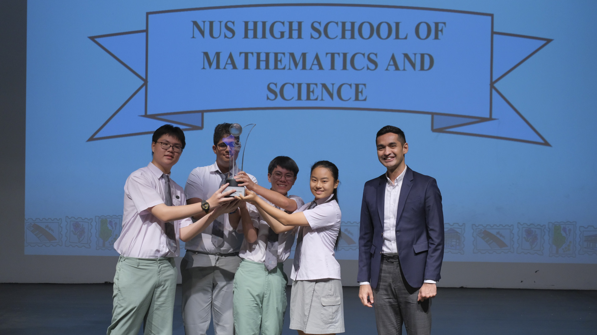

Students examine what makes a liveable city at 30th NUS Geography Challenge
Students from the NUS High School of Mathematics and Science yesterday emerged champions of the 30th NUS Geography Challenge, a national competition organised by the Department of Geography at the National University of Singapore (NUS).
Baca Selengkapnya